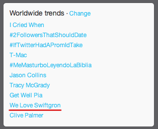
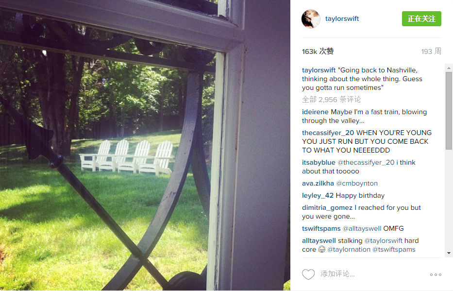
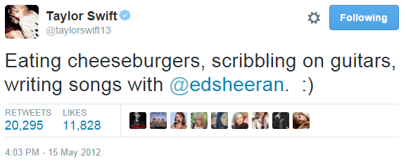
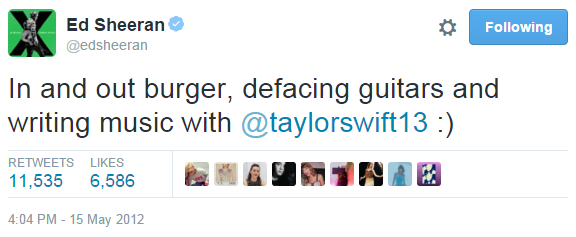
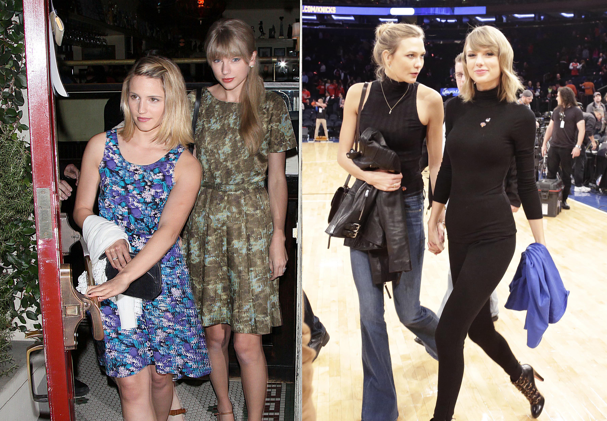
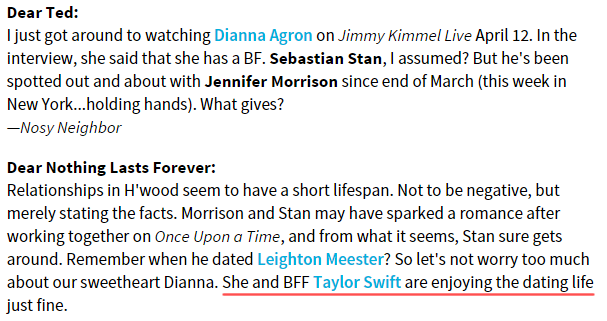
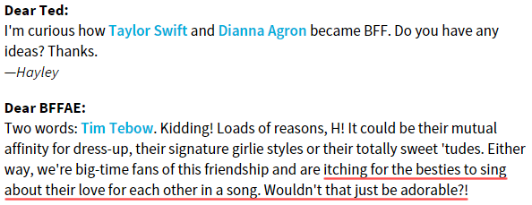
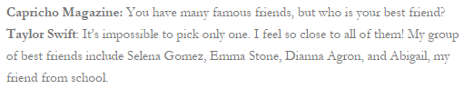

2. Everyone Was Watching
从3月21号开始到4月底， TS和DA在一起的记录有：
3.21，F4 dress-up night，DA没有露面;
3.25，TS和DA看饥饿游戏，被路人拍到合影;
3.30，TS和DA和Mama Swift吃饭，没有拍到DA；
3.31，TS去DA家参加Jessica Szohr生日party，有目击没有图；
4.7，TS、DA、Emma Stone、Ashley在纽约Otto吃饭，有目击没有图；
4.8，TS去DA住的Bowery酒店，有目击，有分别与粉丝的合影；
（4.14-15，TS从Nashville回到LA，当天DA也在LA，不确定是否见面）
4.24，F4 dress-up night，有合影；
（4.25，据说DA晚上去TS家，不能确定是否属实）
4.28，TS参加DA生日party，有合影；
4.30，TS参加DA私密生日聚会，没有合影；
为了确保真实性，来自2个及以上不同人的目击才算是目击
去掉不能确定的2次，她们被记载到的相聚是9次，她们自己放出合影2次，被路人拍到合影1次，被路人分别拍到照片1次，被目击在一起3次，一次都没被狗仔拍到。
如果不是特别留心的关注她们，只能知道她们看了1次电影，2次dress-up，总共3次合影罢了。
然而仅仅3次合影，在DA生日之后，5月初，Swiftgron竟然上了推特趋势。
{kind=link}
时间继续
5月4号，TS在LA有个小型粉丝见面活动，她告诉粉丝第2天她要飞回Nashville继续完成新专辑finish recording album。
5月5号，回到Nashville，下午Sarah Barlow给TS拍摄了一组为新专辑准备的图，她没有换衣服没有换发型，晚上先见了一些粉丝，然后参加了Will Anderson的生日party，图1，图2。
{kind=link}
{kind=link}
{kind=link}
她下午拍的这组图里，有2张后来成为了RED的单封，一个是Begin Again，一个是Everything Has Changed。这两首歌的单封来自于同一组图，这是很明显的（可以点开上面链接看大图），这是同一个房间，一样的墙纸，一样的光照，一样的衣服，一样的发型，右手上有一样的手环。晚上和粉丝合影，参加生日party时的衣服发型也没有变，这是同一天。


为什么在这里要强调她在同一天先拍了备选图片，然后见了粉丝，参加生日party呢？
因为流传的说法中，Begin Again被认为是写给Will Anderson的，其中一个【证据】就是Begin Again单封中她穿的裙子和她去Will Anderson生日party时穿的裙子一样。但现在看看，这不过是TS拍摄完，觉得这裙子没什么不好懒得换衣服就出门继续活动了。如果真要说裙子一样这歌就是写Will的，那Everything Has Changed不也得是写Will吗，这也是一样的裙子啊。Will Anderson是TS在Nashville的好朋友，他们认识多年了，也一起出去玩过很多次，要能在一起早就在一起了，11年底传过他俩绯闻，被Gossip Cop辟谣过，而且他俩一直都在说，只是普通朋友。
{kind=link}
（关于TS从未和Will Anderson date过，Begin Again不是写他，详情见Chapter2.3 Begin Again）
5月10号，TS在INS发了一张图，引用了一段歌词：
{kind=link}
"Going back to Nashville, thinking about the whole thing. Guess you gotta run sometimes"
不知道是她预感到了今后的发展，还是随口一说一语成谶，看她评论中现在的粉丝留言，引用了不少1989的歌词：
"When you're young you just run, but you come back to what you need" —— This Love
"I reached for you but you were gone" —— Wonderland
她真是预言帝，唉……
5月15号，TS终于回到LA，中午和Ed在In & Out Burger吃汉堡 ，下午一起（在TS家）写歌，大概是写好后，两人同时发推。
 我想霉粉都知道这是哪首歌了，TS和Ed只合作发行过一首，就是Everything Has Changed。她在纳什维尔"thinking about the whole thing"的结果就是在5月15号写下了Everything Has Changed。
这首歌讲什么呢
在RED track by track（9分56秒开始）中说: "It's about this moment, that both people are having when they see each other, and all of the sudden the world looks different."
在接受IBTimes采访时说: "It's about falling in love, It's about meeting someone and all of a sudden your entire perspective on the world changes - you're thinking for two, instead of one."
2012年10月22号RED发行后，这首歌被认为是写Conor Kennedy的，因为隐藏信息是Hyannis Port，国庆节TS去Hyannis Port度假遇到了Conor， Kennedy家族的房产在那，TS买的房子也在那，Conor后来成为TS的“男朋友”，所以EHC是写Conor的。
但是EHC是TS在5月15号写的，5月28号和Ed去录音室录的，这时候Conor还在Deerfield Academy里上课呢。
（Deerfield Academy：迪尔菲尔德学院，位于马萨诸塞州，一所古老而优秀的寄宿高中）
可能有人会说，也许TS之前就认识Conor了，所以在5月份给他写了EHC也说不定呢。
让我们看看，这时候TS只住在纳什维尔和洛杉矶，而Conor在美国东北读寄宿高中，他们能够认识要么是Conor跟着家人参加过什么颁奖礼遇到了TS，要么是TS去过肯尼迪家。但实际上呢，在12年1月TS参加圣丹斯电影节< Ethel >首映式见过Ethel和几个肯尼迪家族成员，那天Conor并不在；TS在7月国庆节之前从没去过肯尼迪家族所在地；TS身边但凡出现过的男人一个都没有被媒体漏过，Austin都能被说成是新男友，HS4月份和TS一张合影都没有也能被传得有模有样的，而在7月之前TS和Conor没有任何照片或传闻。以上种种证明7月之前TS和Conor没有任何关系。
写于5月的EHC，明明和Conor无关，为什么隐藏信息要用7月份才出现的Hyannis Port，任何人看到这个词都会往Conor Kennedy身上想，这是第三个悬念。
下午TS和Ed写完EHC，晚上F4一起在Dominick's Restaurant吃饭，离开时被狗仔拍到。Ashley一个人先冲出餐馆，Claire殿后，DA和TS夹在中间一起出门。
下面这张图一定要点开看大图，看看站在右边的这个家伙，2012年和2014年，情侣装，直视镜头得意洋洋的眼神，迷之微笑，一点都没变。
{kind=link}
这是她们第一次被狗仔拍到。
第二天，铺天盖地的媒体撰文来了，不是只有YY党说她们穿情侣装，长眼的都看出来了，摘录几个：报道一，报道二，报道三。
{kind=link}
{kind=link}
{kind=link}
4月底DA生日已经让媒体兴奋一次，这次情侣装一穿，他们就把前面几次也翻了出来，一看4月24号Dress-up那天她们也穿得挺“搭配”的~头上都装饰着花，都戴着白手套。
还记得5月初Swiftgron上了Twitter趋势吧，一波未平一波又起，这一次炸得更狠。
这才是第一次被狗仔拍到（身边还有其他朋友的）合影，媒体已经有那方面的暗示了，虽然在没有确实证据前媒体是不敢乱写的，如果后面接着还有第2次、第3次……这样的合影，被人讲出来是迟早的事。
在这个圈子工作的都是明眼人，很多人早就心知肚明，言谈间含沙射影又不点破。
Jimmy Kimmel在4月12号就直接问DA："Are you dating her?"
Ted Casablanca是美国娱记和八卦专栏作家，在E!Online上有个运营了16年的专栏，每周会回答读者的一些提问。
比如有读者看完4月12号的Jimmy秀后纳闷，问：DA说Sebastian Stan是她男朋友，但是那男的3月份都已经和Jennifer手牵手了哦，这是怎么回事呀？
Ted回答：（前面那几句简而言之就是Sebastian现在没和DA在一起），不用为我们的甜心Dianna担心。她正和她的BFF Taylor Swift享受dating life呢
这时候TS和DA名义上都是单身的，正常情况应该是说single life对不~
在TS和DA是BFF这件事广为人知之后，又有读者问：我很好奇她们是怎么成为BFF的？
Ted回答：两个字：Tim Tebow，才怪！很多原因啦，比如她们都喜欢玩dress-up，有同样的穿衣品味等等。我们都很喜欢她们的友情并且（重点来了）期望她们能对唱一首（情）歌，那就太棒了!
To sing about their love for each other in a song，这个意思自己想吧
老头子真是语不惊人死不休。
观众问出了前面2个悬念，TS和DA怎么成为BFF的，和Tim Tebow有没有什么关系。
在外界看来，是Taylor Swift Dianna Agron和Tim Tebow的三角绯闻把TS和DA联系起来的，然后TS才关注了DA，才开始和她一起玩。从时间上看的确好像是这样。
2月底开始传TS和Tim，3月21号开始传DA和Tim，3月22号TS在推特上依次关注了Tim Tebow、Claire和DA，3月25号TS就和DA看饥饿游戏去了，3月26号开始传他们三角。很多人甚至觉得她们两人的友情可能是PR的，因为媒体传TS和DA为了Tim Tebow争风吃醋，所以她们就一起公开露面表示我们很友好，撕逼是没有的事。
但实际上，TS和DA的交集早就开始了。
2012年4月，TS上了一个墨西哥杂志Capricho Magazine的封面，因为语言不通我找不到原文，找到了也看不懂，但杂志出刊肯定是4月，当时贴吧都有贴图。
重点是，杂志访谈里问到TS：who is your best friend?
TS回答：Selena Gomez, Emma Stone, Dianna Agron and Abigail
其他3个人都是TS认识很多年的好朋友，现在多了一个Dianna Agron。
杂志是4月出刊，但访谈是几个月前的。
看其他杂志的提前量，12年10月的滚石是8月拍的，13年3月的ELLE是12年12月拍的，15年3月的Vogue是14年11月拍的，15年11月的GQ是8月拍的。一般提前2-3个月。
以此类推，TS告诉Capricho Magazine，Dianna Agron是她的best friend最晚也是12年2月。她们成为best friend只会比这个更早。
TS和DA最晚2月已经是best friend，那为什么之前任何痕迹都看不到，为什么TS到了3月22号才在关注了Tim Tebow和Claire之后才关注DA？
看不到痕迹这个可以理解
TS被公认的前男友：Joe Jonas、Taylor Lautner、John Mayer、Jake Gyllenhaal，每一个都不是同性绯闻绝缘体，所以有人怀疑TS和里面谁谁是PR不是真的（我没说他们都不是真的），但是，哪怕是认为二乔、小狼、Jake全都是假的人也认为Mayer是真的，因为TS把他藏起来了。到现在我们也只是猜他们的时间和经过，除了合作时的合影，他们在一起时一张照片都没被拍到过。
TS和DA在2011年9月4号第一次正式相遇，她接着Speak Now巡演到11月22号结束，再然后最晚在12年2月TS和DA已经是best friend了，期间发生了什么没有任何记录。
TS和KK在2013年11月13号VS见面后再无公开交集，14年2月4号KK接受采访时就说TS是best friend，3月3号两个人就road trip去了，期间接近4个月同样没有任何记载。
连节奏都这么相似。不同之处，TS在14年2月把KK写进了1989，但更多的她们留给了六专；TS在12年的RED中本来只写燃烧殆尽的旧情，但她4、5、6月为DA补录的歌让RED变成燃烧的旧情和新的开始。
YOU'LL BE MINE AND I'LL BE YOURS
ALL I KNOW SINCE YESTERDAY IS EVERYTHING HAS CHANGED